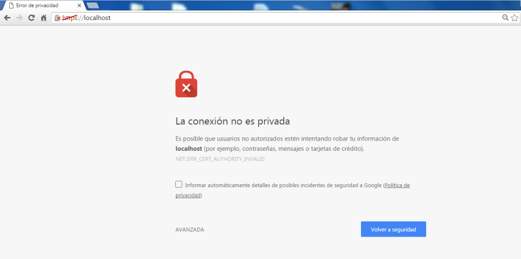

Cambiar Postman a HTTPS
Permite seleccionar el Verbo HTTP que vamos a probar, apuntar a la URL de nuestra
API, colocar encabezados, y en cuanto al BODY de nuestra petición se puede hacer en
diferentes formatos, ejemplo application/json o application/x-www-form-urlencoded o
multipart/form-data, entre muchos otros.
El problema es cuando estamos haciendo nuestras API subiendo un servidor Web por el
puerto 443 con certificados autofirmados. Es decir, si tenemos Postman como un plugin
de chrome y queremos hacer pruebas de nuestra API que se encuentra en
la URL: https://localhost/api/recurso, Postman nos generará un error debido a que el
certificado autofirmado no es seguro. Si ingresamos desde chrome y digitamos
https://localhost nos aparecerá esta advertencia:

Bien, pues debido a que los navegadores advierten sobre posibles problemas de seguridad
cuando el certificado no es válido, "Postman no puede realizar la petición". Así que la
solución a este problema es muy sencillo. He visto que lo que hacen algunas personas es
exportar el certificado desde el navegador y luego lo importan como un certificado de
confianza, pero es un proceso algo peligroso debido a que por ejemplo si alguien genera un
certificado con la misma autoridad certificadora (ejemplo Acme co), entonces para tu
computador ese certificado será de confianza y permitirá seguir sin problema. Así que una
mejor opción es la siguiente (siempre y cuando estés usando Postman como plugin de chrome):
Abre tu navegador chrome y en la barra de direcciones digita: chrome://flags/
Ten cuidado con esta ventana ya que puedes habilitar características que vuelvan inestable
tu navegador.
Luego vas a buscar la siguiente opción:
Si tu navegador está en español: Permitir certificados no válidos para los recursos cargados
desde el host local.
Si tu navegador está en inglés: Allow invalid certificates for resources loaded from
localhost.
Y habilita esa opción. Luego te solicitará reiniciar chrome y listos!
Ahora el navegador chrome te permitirá ingresar a la URL https://localhost sin esa advertencia
donde debes autorizar manualmente el ingreso a la página, y Postman ya te permitirá hacer las
pruebas pertinentes.
A diferencia de importar el certificado, con esta opción estás seguro que el navegador seguirá
solicitando permiso manual para aquellas páginas que tengan un certificado no válido.